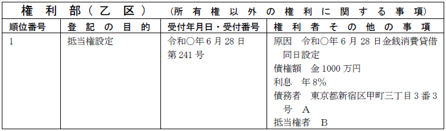
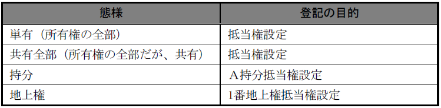
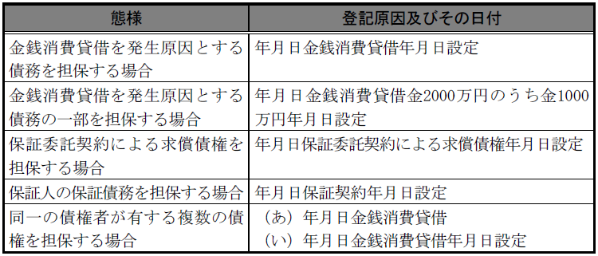
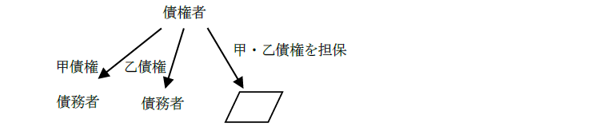
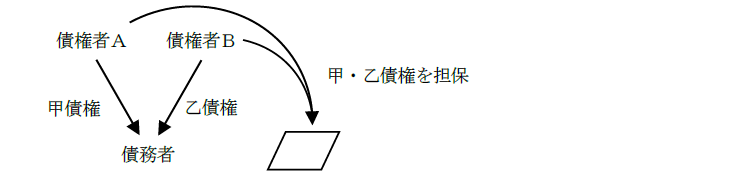
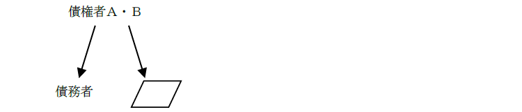

第１編 各 論
第２章 抵当権の登記
第１節 抵当権設定登記
債務者又は物上保証人が債務の担保に供した不動産、地上権及び永小作権について、他の債権者に先立って自己の債権の弁済を受ける権利（民法369条）
cf. 賃借権を目的としては設定することができない。
【申請例45 抵当権設定 金銭消費貸借】
事例： 令和○年6月28日、ＡとＢは、債権者Ｂ、債務者Ａとして、金1000万円を利息年8％、弁済期日を令和39年6月28日で貸し付ける金銭消費貸借契約を締結し、金1000万円がＡに交付された。同時にＡ所有土地を目的として、この貸金債権金1000万円を担保するため、抵当権設定契約を締結した。

【不動産（所有権）に抵当権を設定した場合】
登記記録の権利部の乙区に主登記で抵当権設定の登記がなされる。
【地上権・永小作権に抵当権を設定した場合】
登記記録の権利部の乙区に、対象となる地上権・永小作権の登記に付記登記でされる（不登規3条4号）。
1. 登記事項
(1) 絶対的登記事項
(a) 債権額（83条1項1号）
(b) 債務者（83条1項2号）
債務者の氏名又は名称及び住所が登記事項となる。
①債務者が連帯債務の関係にある場合は、「連帯債務者」と記載する。
②権利能力なき社団を債務者として申請情報の内容とすることができる（昭31.6.13民甲1317）。
債務者の表示は、登記事項の一部であって、登記名義人となるわけではないからである。
(2) 任意的登記事項
(a) 利息に関する定め（88条1項1号）
① 無利息の定めがある場合：「無利息」と記載する（登研470P.98）
② 登記原因証明情報である金銭消費貸借抵当権設定契約証書に記載されている利息の定めが利息制限法の制限利率を超える場合に、制限利率内の利息を申請情報の内容として登記の申請をすることができる（昭29.7.13民甲1459）。
③ 「利息年○％ ただし、将来の金融情勢に応じ利率を適宜債権者が変更することができるものとする。」というような不明確な定めを記載することはできない（昭31.3.14民甲506）。
④ 法定利率は変動するが（民法404条参照）、変動後の利率を第三者に対抗するには登記が必要である。したがって、具体的な割合が登記されていない限り、登記原因の日付上の被担保債権の発生原因の債権契約成立時点の法定利率でしか、第三者に対抗することができないと解される（令2.3.31民二.328）。
⑤ 登記した利息の利率を変更するときは、通常の変更登記と同様、共同申請による（令2.3.31民二.328）。
(b) 損害賠償額の定め（88条1項2号）
民法375条2項に規定する損害賠償額の定めがある場合には、損害賠償額の定めを申請情報の内容としなければならない。
定期金的性質を有しない違約金の定めは登記できない（昭34.7.25民甲1567）が、定期金的性質を有するものなら損害金として登記できる（昭34.10.20第999号）。
(c) 債権に付した条件（88条1項3号）
債権に付した条件があるときは、その条件を申請情報の内容としなければならない。
ex. 債権者が死亡したときは、債権が消滅する。
(d) 民法370条ただし書の別段の定め（88条1項4号）
抵当権が付加一体物に及ばない旨の別段の定め（民法370条ただし書）をしたときは、その内容が登記事項となる。
ex. 立木には、抵当権の効力は及ばない。
(e) 抵当証券発行の定め（88条1項5号）
(f) 抵当証券発行の定めがあるときの元本又は利息の弁済期又は支払場所の定め（88条1項6号）
通常の抵当権の登記においては登記事項とならない。
(g) 取扱店の表示
金融機関が抵当権者となる場合には、申請情報の内容として取扱店（支店）を表示することができる（昭36.5.17民甲1134）。銀行等の便宜をはかったものである。銀行等は支店ごとに担当地域がある。
ex. 「取扱店 横浜駅前支店」
信用金庫、信用組合、信用保証協会（以下「信用金庫等」という。）の取扱店を登記申請情報に記載した場合には、登記記録に当該信用金庫等の取扱店が表示される（登研866Ｐ.249）。
2. 申請人
登記権利者：抵当権者
登記義務者：抵当権設定者（債務者ｏｒ物上保証人）
3. 添付情報
・登記原因証明情報（61条、不登令別表55添付情報）
登記原因証明情報として抵当権設定契約書等を提供する。
※印鑑証明書は、設定者が所有権の登記名義人の場合は必要となる。
4. 登記の目的
抵当権の設定の対象によって、以下のように目的の記載方法が変わる。

【不動産や権利の一部が問題になるケース】
(1) 競売開始決定による差押えの登記がされている不動産であっても、抵当権設定登記の申請をすることができる。競売手続に関する限りでは、差押債権者には対抗することができず、競売手続上一切無視されるという手続的相対効があるが、契約当事者間では有効だからである。
(2) 主たる建物と附属建物とからなる1個の不動産は、主たる建物又は附属建物のみに対し抵当権設定の登記をすることができるか？
→分割登記をし、独立した別個の建物とした上でなければ、主たる建物又は附属建物のみに対し抵当権設定の登記をすることができない（明37.2.13民刑1057）。
(3) 所有権の一部や持分の一部に抵当権を設定することはできるか？
→原則としてできない（昭35.6.1民甲1340、昭36.1.17民甲106）。
(4) 同一人物が数回に分けて持分を取得している場合、例えば、ＡからＢが順位番号3番と順位番号4番とに分けて持分を取得した場合には、Ｂの持分の一部（順位3番又は4番で登記した持分）について抵当権を設定することができるか？
→ できる（昭58.4.4民3.2252）。この場合の登記の目的は、「Ｂ持分一部（順位○番で登記した持分）抵当権設定」のように記載する。
5. 登記原因及びその日付

(1) 年月日が問題となるケース
①将来建築される建物を目的不動産とする抵当権設定の登記を申請することができるか？
→ できない（昭37.12.28民甲3727）。しかし、登記記録に記録されている建物の建築年月日前に締結した抵当権設定契約に基づく登記の申請はすることができる（昭39.4.6民甲1291）。完全に完成していなくても、雨風をしのげる程度まで完成していれば、独立の不動産といえるからである。
②抵当権の設定者となろうとする者が、不動産を取得する以前の日付で金銭消費貸借契約及び当該不動産を目的とする抵当権設定契約を締結し、その後当該不動産を取得した場合、当該抵当権設定契約を原因とする抵当権設定の登記を申請することはできるか？
→ できない（登研440P.79）。
③他人名義の不動産について、それを取得することを停止条件とする抵当権設定契約を締結することができるか？
→ できる。この場合、条件成就の時、つまり、設定者が目的不動産の所有権を取得した時に抵当権が成立するので（大決大4.10.23）、当該抵当権設定の登記の原因日付は、所有権を取得した日となる（登研141Ｐ.45）。
④清算中の会社を設定者とする抵当権設定の登記の申請は、抵当権設定契約日が解散決議日の後であっても、することができるか？
→ 抵当権設定契約日が解散決議日の前後のいずれであるかを問わず、することができる（昭41.11.7民甲3252）。
清算中の会社は、清算の目的の範囲内において存続するが、抵当権設定も清算の目的を達成するために必要な行為であれば認められるからである。
(2) 被担保債権が問題となるケース
①抵当権設定契約後に債権額の一部が弁済された場合、現存する債権額についての抵当権設定の登記の申請は、することができるか？
→ できる。この場合、一部弁済の旨を申請情報の内容とする必要はない（昭34.5.6民甲900）。
②請負契約に基づく請負代金債権担保のため、請負契約と同時に抵当権の設定をし、その登記をすることができるか？
→ できる（昭44.8.15民3.675）。将来債権であっても、その発生の可能性が法律上あれば、抵当権の被担保債権とすることができる。
③主たる債務者のために、保証人が債権者と保証契約を締結した場合、主たる債務を担保する抵当権の登記がされている場合であっても、将来保証人が保証債務を履行することで発生する債務者に対する求償債権を被担保債権として抵当権を設定することができるか？
→ できる（昭25.1.30民甲254）。求償債権は、将来発生する法律上の可能性があるからである。したがって、たとえ主たる債権を被担保債権とする抵当権が設定されていたとしても、設定することができる。
④債権者を同じくする数個の債権を合わせて担保する1個の抵当権を設定し、その登記をすることができるか？

→ できる（昭45.4.27民3.394）。各債権の債務者は同一でも、異なっていてもよい。
⑤債権者を異にする数個の債権を合わせて担保する1個の抵当権の設定をし、その登記をすることができるか？

→ できない（昭35.12.27民甲3280）。債権者は自己の債権については抵当権を取得することはできるが、他人の債権については抵当権を取得することはできない。抵当権は、債権者・債務者間の合意により設定されるものであり、仮に他の債権者の許諾を得たとしても、他人の債権についての抵当権を取得することはできないからである。
⑥数人の債権者が共有する1個の債権を担保する1個の抵当権の設定をし、その登記を申請することができるか？

→ できる。この場合には、他人の債権について抵当権を取得するという問題は生じない。
(3) 債権額が問題となるケース
①債権額を外国の通貨をもって表示する場合に、日本の通貨をもって表示する担保限度額は、抵当権設定契約日の為替相場によらず、当事者間で自由に定めた邦貨換算額をもって登記の申請をすることができる（昭35.3.31民甲712）。
ex. 「債権額 米貨金10万ドル 担保限度額 金1000万円」
②分割貸付に係る債権について抵当権を設定した場合には、その全額が貸し付けられていない場合であっても、分割貸付証書に記載された総額を被担保債権として登記の申請をすることができる。
(4) 登記原因が問題となるケース
①被担保債権が成立した後にその利率が変更された場合は、利率を変更した日を登記原因日付として抵当権設定の登記をすることができるか？
→ できない。
被担保債権の利率が変更されても債権の同一性に影響はない（昭40.12.1民甲3322）ので、被担保債権の成立した日を登記原因日付としなければならない。
②民法420条に基づき当事者が債務不履行の場合の損害賠償額の予定契約をした場合、登記原因を「損害賠償額の予定契約」と記載して、その将来の債権を担保するために抵当権を設定することができるか？
→ できる（昭60.8.26民3.5262）。
③金銭消費貸借契約上の債務を担保するため抵当権が設定されている場合において、追加担保として被担保債権の発生原因を「債務弁済契約」と記載した抵当権設定の登記の申請は、することができるか？
→ できない（昭40.4.14民甲851）。
「債務弁済契約」は新たな被担保債権の発生原因とはいえない。
④登記原因を「債務承認契約」と記載する抵当権設定の登記の申請は、当該契約が単に既存の債務を承認し、その弁済方法を定めたものではなく、新たな債権契約と認められる場合には、することができるか？
→ できる（昭58.7.6民3.3810）。
「債務承認契約」は新たな被担保債権の発生原因といえる。
6. その他の記載方法
(1) 債権の一部を担保する場合
当該債権の一部の債権額を申請情報の内容とする（昭30.4.8民甲683）。債権額の一部である旨を登記事項として明示する必要はない。
(2) 数個の債権を併せて担保する場合
(3) 元本債権と利息債権を併せて担保する場合
「債権額 金1050万円
内訳 元本 金1000万円
利息 金50万円（令和○年4月1日から令和○年3月31日までの分）」等と記載する。
(4) 数個の債権を担保し、利息及び債務者が異なる場合
【申請例46 2個以上の債権を担保する場合、利息及び債務者が異なるときの申請例】
事例： 令和○年6月20日、ＡとＢは、債権者Ｂ、債務者Ａ（住所：東京都新宿区甲町三丁目3番3号）として、金1000万円を利息年2％、損害金年11.5％、弁済期日を令和39年6月19日で貸し付ける金銭消費貸借契約を締結し、金1000万円がＡに交付された。また、令和○年6月27日、ＣとＢは、債権者Ｂ、債務者Ｃ（住所：東京都豊島区乙町五丁目5番5号）として、金1000万円を利息年1.5％、損害金年11.5％、弁済期日を令和39年6月26日で貸し付ける金銭消費貸借契約を締結し、金1000万円がＣに交付された。同日、ＡとＢは、これらの債権を併せて担保するため、Ａ所有土地を目的として、抵当権設定契約を締結した。